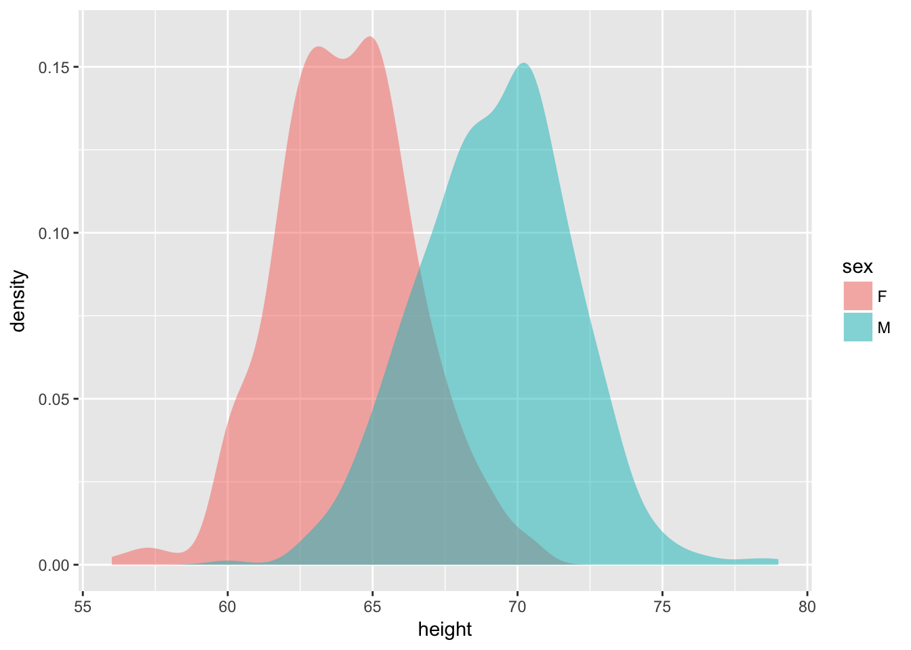

You can page through the Galton data table but it is very hard to draw conclusions from the table itself. Data presentations show data in a manner better suited for interpretation by people. The proper design of the presentation depends on its purpose: what aspect of the data you wish to emphasize. There can be very different presentations of the same data for different purposes.

Figure 3: A graphical presentation of Galton’s data for the purpose of comparing heights by sex.
Presentations often are numerical in form, such as this report of the means and standard deviations of the heights of the girls and boys in Galton’s data.
## sex m s
## 1 F 64.11016 2.370320
## 2 M 69.22882 2.631594Or, consider this rather more technical presentation on the difference in mean heights between the sexes:
## estimate statistic p.value conf.low conf.high
## 1 -5.118656 -30.66182 1.042115e-141 -5.446293 -4.791018Much of what we teach in intro stats is about familiarizing students with a variety of forms of data presentations and how to draw conclusions from them.